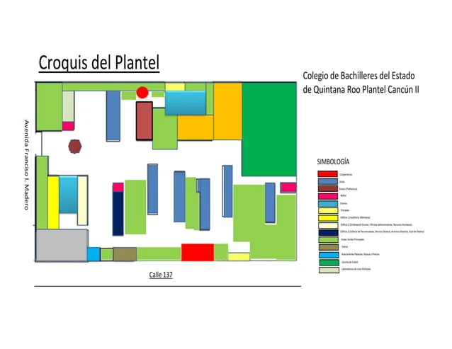

Nuestro colegio
Conoce un poco acerca de nuestras instalaciones
El colegio cuanta con x aulas y x docentes. Acepta hasta 45 alumnos en las aulas, que se adaptan a sus necesidades.
El bachillerato tiene una duración de 3 años, que se realiza en 6 semestres.
El plan de estudios está conformado por 3 áreas:
- Formación básica
- Formación específica
- Formación laboral

Ubicada en Cancún Q.Roo. Sobre la av. Francisco I. Madero(Ruta 4) en la región 102, a 4 cuadras de donde se coloca el tianguis "de la 100".
Los alumnos que asisten en colectivo suelen utilizar la combi de la ruta 4 que les deja justo en la entrada principal.